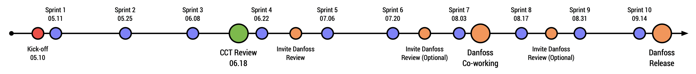

WMB Agile Plan in FY2021

Contents of the website include "System and software architectures", "Low-code paragidm designs", "Showcase and demos" and "FB libraries". It's targeting internal stakeholders, developers, testers, reviewers and other relevant colleagues.
All elements in the website can only be viewed and shared in Siemens T & ADV internally. Please do NOT expose any elements with external customers or BU without being approved by management.
Current work progress of WMB MVP (only main features):
Overall effort percent of every main sub-systems:
The website and all elements are created by Zhen Hua, Zhou (Ciel) from Siemens T. Any technical questions please feel free to send mail to me (You could click 'Send Email' button in the content menu to send). You can also add my WeChat, but please indicate who you are.